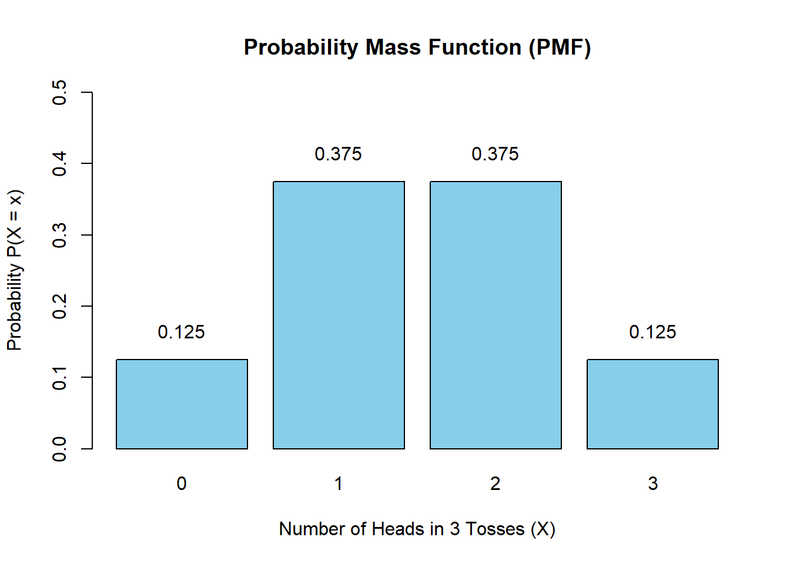
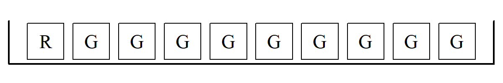

7 Discrete Probability Distributions
We begin by defining a random variable as a function or rule that assigns a number to each outcome of an experiment. Instead of talking about the coin flipping event as {heads, tails}, for example, we can think of it as 1 and 0, what we often call an indicator variable. This is actually a numerical event which can be called ‘the number of heads when flipping a coin’.
Formally, a random variable is defined as:
\[ X: \Omega \to \mathbb{R} \] where \(\Omega\) is the sample space (all possible outcomes of the experiment), \(X\) is a measurable function that maps each outcome \(\omega \in \Omega\) to a real number \(X(\omega)\).
So, the experiment produces an outcome \(\omega\), and the random variable translates that outcome into a number. Hence one can view the random variables as a ‘bridge’”’ from experiment → numbers.
The probability distribution is a listing of all possible outcomes of an experiment and the corresponding probability. Once we have a random variable \(X\), we can ask: how likely is each possible value of \(X\)? That’s where the distribution comes in. It is the probability measure induced by \(X\):
\[ P_X(A)=P(\{\omega \in \Omega: X(\omega) \in A \}) \] where \(P\) is the probability measure on the sample space, \(P_X\) is the distribution of \(X\) and \(A\) is a set of real numbers (e.g., an interval).
This tells us: the probability that \(X\) takes values in \(A\) is equal to the probability of all outcomes that map into \(A\). In pther words, a distribution is like a rulebook-it specifies the probabilities attached to those numbers, telling us the ‘laws’ governing randomness.
7.0.1 Tossing a fair coin
This approach shows that correlation:
- Sample space: \(\Omega =\) {Heads, Tails}
- Random variable: \(X\)(Heads) \(=1\), \(X\)(Tails) \(=0\)
- Distribution: \(P(X=1)=1/2\), \(P(X=0)=1/2\)
A discrete distribution is based on random variables which can assume only clearly separated values i.e. takes on only whole numbers like \(0, 1, 2, \dots\) while a continuous distribution can assume an infinite number of values i.e. takes on any value on the Real line, within a given range. A useful analogy is “Integers are discrete, while Real Numbers are continuous”.
ImportantDiscrete vs. Continious
- Discrete random variable: Distribution given by a probability mass function (PMF)
\[ P(X=x_i) = p_i, \quad \sum_i p_i = 1 \] - Continuous random variable: Distribution given by a probability density function (PDF)
\[ P(a \leq X \leq b) = \int_a^b fx(dx), \quad \int_{-\infty}^{\infty} f(x)dx=1 \]
7.1 The discrete random variable
When dealing with univariate data, we have seen how the histogram together with its mean and standard deviation are a useful way to summarize data. In statistics, what in fact we are dealing with is a random variable, sometimes denoted \(r.v\), which is nothing more than a function or rule that assigns a number to each outcome of an experiment. And as we have already mentioned, the outcomes of a random variable can be described by a probability distribution, which are a listing of all possible outcomes of an experiment and their corresponding probabilities.
Let us look at an example. This time, consider an experiment in which a coin is tossed three times. Let \(X\) be a \(r.v\) representing the number of heads in 3 tosses. The possible outcomes are:
\[ \begin{array}{|c|c|} \hline \text{Outcome} & \text{No. of Heads} \\ \hline \text{T T T} & 0 \\ \text{T T H} & 1 \\ \text{T H T} & 1 \\ \text{T H H} & 2 \\ \text{H T T} & 1 \\ \text{H H T} & 2 \\ \text{H T H} & 2 \\ \text{H H H} & 3 \\ \hline \end{array} \]
Note we have 8 equally likely outcomes from which we can easily construct the probability distribution of \(X\), the number of heads in 3 tosses, as:
\[ \begin{array}{|c|c|} \hline X & P(X) \\ \hline 0 & 1/8 \text{ or } 0.125 \\ 1 & 3/8 \text{ or } 0.375 \\ 2 & 3/8 \text{ or } 0.375 \\ 3 & 1/8 \text{ or } 0.125 \\ \hline \mathbf{\Sigma} & \mathbf{1.000} \\ \hline \end{array} \]
The probability distribution, sometimes also referred to as the probability function, is in fact a histogram which looks as follows:
The corresponding cumulative probability distribution can be drawn as:

7.2 The mean and the variance
Apart from drawing the probability distribution or histograms, we have seen that numerical summaries such as the mean and variance are useful.
The mean is the long-run average value of a random variable, which is also referred to as its expected value, denoted \(E(X)\).1
\[ E(X) = \mu = \sum_{i=1}^{n} X_i P(X_i) \tag{7.1}\]
The variance which measures the spread or variation of the distribution is defined as:
\[ Var(X) = \sigma^2 = \sum_{i=1}^{n} (X_i- {\overline X})^2 P(X_i) \tag{7.2}\]
To get the standard deviation, simply calculate the square root of the variance.
Let’s see this with the example above which defines the random variable \(X\) as the number of heads in 3 tosses.
To compute the mean, use Equation 7.1, shown in the table below–summing the last column of the table gives \(\mu = 1.5\).
\[ \begin{array}{|c|c|c|} \hline X & P(X) & X \cdot P(X) \\ \hline 0 & 1/8 & 0 \\ 1 & 3/8 & 3/8 \\ 2 & 3/8 & 6/8 \\ 3 & 1/8 & 3/8 \\ \hline \textbf{Total} & \mathbf{1} & \mathbf{12/8 = 1.5} \\ \hline \end{array} \]
To get the variance, applying Equation 7.2, as shown in the the table below and summing the last column of the table gives \(\sigma^2 = 0.75\)
\[ \begin{array}{|c|c|c|c|} \hline X & P(X) & (X_i - \mu) & (X_i - \mu)^2 \cdot P(X) \\ \hline 0 & 0.125 & -1.5 & 0.28125 \\ 1 & 0.375 & -0.5 & 0.09375 \\ 2 & 0.375 & 0.5 & 0.09375 \\ 3 & 0.125 & 1.5 & 0.28125 \\ \hline \mathbf{\Sigma} & \mathbf{1.000} & & \sigma^2 = \mathbf{0.75} \\ \hline \end{array} \]
Careful, we have the variance \(=0.75\), hence the standard deviation \(\sigma = \sqrt{0.75}\) which is about \(0.8667\).
7.3 Rules of expected value and variance
Let us introduce some basic rules of expected value and variance. Firstly, for expected value, we have:
Rule E1 \[E(k)=k\] Rule E2 \[E(X+k)=E(X)+k\]
Rule E3 \[E(kX)=kE(X)\]
Rule E1 states that the expected value (or average) of a constant is that constant. Rule E2 states that the expected value of a random variable to which a constant has been added is equal to the expected value of the random variable plus the constant. Rule E3 states that the expected value of a random variable multiplied by a constant is equal to the constant times the expected value of the random variable.
Secondly, the rules of variance are:
Rule V1 \[Var(k)=0\]
Rule V2 \[Var(X+k)=Var(X)\]
Rule V3 \[Var(kX)=k^2 Var(X)\]
Rule V1 states that the variance of a constant is zero (i.e., there is no spread). Rule V2 states that the variance of a random variable to which a constant has been added is simply equal to the variance of the random variable. Lastly, Rule V3 states that the variance of a random variable multiplied by a constant is equal to the constant squared times the variance of the random variable.2
NoteExample: Monthly Profit Analysis
Let’s illustrate how these rules apply to a real-world scenario.
The Data: For a food store, monthly sales have a mean (\(\mu\)) of Baht 25,000 and a standard deviation (\(\sigma\)) of Baht 4,000. Profits are defined as 30% of sales minus fixed costs of Baht 6,000.
The Goal: Find the mean and standard deviation of the monthly profit.
1. Define the Equation: \[Profit = 0.30(Sales) - 6,000\]
2. Calculate the Expected Value (Mean):
\[ \begin{aligned} V(\text{Profit}) &= V[0.30(\text{Sales}) - 6,000] \\ &= V[0.30(\text{Sales})] && \text{(Rules V2 \& V1)} \\ &= (0.30)^2 V(\text{Sales}) && \text{(Rule V3)} \\ &= 0.09 \cdot (4,000)^2 \\ &= 0.09 \cdot 16,000,000 \\ &= 1,440,000 \end{aligned} \]
3. Calculate the Variance and Standard Deviation: First, we find the variance (\(V\)). Remember that \(V(Sales) = \sigma^2 = 4,000^2\). \[ \begin{aligned} V(\text{Profit}) &= V[0.30(\text{Sales}) - 6,000] \\ &= V[0.30(\text{Sales})] && \text{(Rules V2 \& V1)} \\ &= (0.30)^2 V(\text{Sales}) && \text{(Rule V3)} \\ &= 0.09 \cdot (4,000)^2 \\ &= 0.09 \cdot 16,000,000 \\ &= 1,440,000 \end{aligned} \]
Finally, the standard deviation is: \[\sigma_{\text{Profit}} = \sqrt{1,440,000} = \mathbf{1,200}\]
7.4 Discrete bivariate distributions
So far, we have focused on univariate distributions. We now extend these ideas to bivariate probability distributions, which arise from joint probabilities.
A joint probability distribution of two discrete random variables \(X\) and \(Y\) is a table or formula that lists the joint probabilities for all pairs of values \((x, y)\). It is denoted by \(P(X,Y)\) or, equivalently, \(P(X = x \text{ and } Y = y)\).
As we would expect, joint probabilities satisfy the following basic properties:
\(0 \le P(X,Y) \le 1\)
and
\(\sum_x \sum_y P(X,Y) = 1\).
7.4.1 Joint and marginal probabilities
We have already encountered an example of a bivariate probability distribution in the previous chapter. That example involved a survey of university graduates working as CEOs and whether they were GA graduates.
The corresponding joint and marginal distributions are summarized in the table below.
| Becomes CEO | Does not becomes CEO | Total | |
|---|---|---|---|
| GA graduate | \(P(A_1 B_1)=0.11\) | \(P(A_1 B_2)=0.29\) | \(P(A_1)=0.40\) |
| Not GA graduate | \(P(A_2 B_1)=0.06\) | \(P(A_2 B_2)=0.54\) | \(P(A_2)=0.60\) |
| Total | \(P(B_1)=0.17\) | \(P(B_2)=0.83\) | \(1.00\) |
\(A_1\) is the event that the individual is a GA graduate, or \(A_2\) otherwise.
\(B_1\) is the event that the individual becomes a CEO, or \(B_2\) otherwise.
The marginal probabilities are obtained by summing the joint probabilities across rows or down columns. They describe the probabilities of \(A\) and \(B\) individually, ignoring the other variable.
Using marginal probabilities, we can compute the mean, variance, and standard deviation of each variable in a bivariate distribution.
7.4.1.1 Marginal distribution of \(A\)
\[ \begin{array}{|c|c|} \hline A & P(A) \\ \hline 1 & 0.40 \\ 0 & 0.60 \\ \hline \end{array} \]
Using the expectation Equation 7.1 and variance Equation 7.2 formulas introduced earlier:
- \(E(A) = 0.40\)
- \(Var(A) = 0.24\)
- \(SD(A) \approx 0.49\)
7.4.1.2 Marginal distribution of \(B\)
Similarly, let \(B\) be an indicator variable that equals 1 if an individual becomes a CEO and 0 otherwise. The marginal distribution of \(B\) is:
\[ \begin{array}{|c|c|} \hline B & P(B) \\ \hline 1 & 0.17 \\ 0 & 0.83 \\ \hline \end{array} \]
The corresponding moments are:3
- \(E(B) = 0.17\)
- \(Var(B) \approx 0.14\)
- \(SD(B) \approx 0.38\)
7.4.2 Covariance of two discrete variables
We have already seen that the covariance between two discrete random variables \(A\) and \(B\) is defined as
\[ Cov(A,B) = \sum_A \sum_B (A - \overline{A})(B - \overline{B}) P(A,B) \tag{7.3}\]
Continuing with the GA–CEO example, the covariance by Equation 7.3 between \(A\) and \(B\) is approximately
\(Cov(A,B) = 0.042\).
7.4.3 Correlation
The correlation coefficient is obtained by dividing the covariance by the product of the standard deviations:
\[ \text{Corr}(A,B) = \dfrac{\text{Covariance}(A,B)}{SD_A \, SD_B} \] For this example, the correlation coefficient \(r \approx 0.23\).
We therefore conclude that there is a weak positive relationship between a GA graduate and becoming a CEO.
7.5 The Binomial formula
We have seen the multiplication and addition rules of probability. Roughly speaking, these rules help us solve “and” and “or” problems. Sometimes, however, we might wish to solve “exact” problems, for example:
- A coin is tossed 4 times. What is the chance of getting exactly one head?
- A die is rolled 10 times. What is the chance of getting exactly 3 Aces?
- A box contains one red marble and nine green ones. Five draws are made at random with replacement. What is the chance that exactly two draws will be red?
It is with such problems that the binomial formula can be very helpful.
7.5.1 Box Model Example
Let’s look more closely at the last example above. We might start with a box model:

From the above, we draw 5 tickets at random with replacement. But we want exactly 2 R’s and 3 G’s (e.g., \(\fbox{R}, \fbox{R}, \fbox{G}, \fbox{G}, \fbox{G}\) or \(\fbox{G}, \fbox{R}, \fbox{G}, \fbox{G}, \fbox{R}\), etc.). The exact probability can be found using 3 simple steps:
1) Find all the possible ways: \[ \frac{5!}{2! \times 3!} = \frac{\text{total cases}}{\text{no. of successes} \times \text{no. of failures}} \]
2) Calculate the chance of each: \[ \frac{1}{10} \times \frac{1}{10} \times \frac{9}{10} \times \frac{9}{10} \times \frac{9}{10} = \left( \frac{1}{10}\right)^2 \left( \frac{9}{10}\right)^3 \]
3) Use the addition rule to add up the chances: \[ \frac{5!}{2! \times 3!} \times \left( \frac{1}{10}\right)^2 \left( \frac{9}{10}\right)^3 \approx 7\% \]
This can be interpreted as the chance of getting exactly 2 \(\fbox{R}\)’s.
Note that step 1 is actually the binomial coefficient, which gives us the total number of combinations of arranging 2 R’s and 3 G’s. In step 2, the chance of getting \(\fbox{R}, \fbox{R}, \fbox{G}, \fbox{G}, \fbox{G}\) is the same as getting \(\fbox{G}, \fbox{R}, \fbox{G}, \fbox{G}, \fbox{R}\), and so on. Lastly, step 3 involves the addition rules as all events are mutually exclusive (disjoint).
7.5.2 The Binomial Formula
ImportantThe Binomial Formula
The chance that an event will occur exactly \(k\) times out of \(n\) trials is given by
\[ P(X=k) = \frac{n!}{k!(n-k)!}p^k (1-p)^{n-k}, \text{ for } k = 0,1,\dots,n \tag{7.4}\]
Where: - \(n\) is the number of trials. - \(k\) is the number of times the event of interest is to occur. - \(p\) is the probability that the event of interest will occur on any particular trial.
Three conditions must hold for the binomial formula to be valid:
- The value of \(n\) must be fixed in advance.
- \(p\) must be the same from trial to trial.
- The trials must be independent of each other.
Quick Example
To find the chance of getting exactly 2 aces in 10 rolls of a die:
\[ P(X=2) = \frac{10!}{2!8!}\left( \frac{1}{6} \right)^2 \left(\frac{5}{6} \right)^8 \approx 0.2907 \]
7.6 The Poisson distribution
The Poisson random variable is a discrete random variable that typically fits cases of rare events that occur over a fixed amount of time or within a specified space or region. Typical cases are, for example:
- The number of customers entering a service station per hour.
- The number of errors a typist makes per page.
- The number of telephone calls received by a switchboard per hour.
7.7 The Poisson Formula
The Poisson probability distribution is given by:
\[ P(X=x) = f(x) = \frac{e^{-\mu} \mu^x}{x!} \tag{7.5}\]
Where: - \(\mu\) is the average number of successes in a particular interval of time or space. - \(e\) is the constant \(\approx 2.71828\dots\) - \(x\) is the number of successes.^[Take care of notation here. We have introduced \(f(x)\): the small “\(f\)” represents a probability density function.
Correspondingly, a large “\(F\)”, say, \(F(x)\), would refer to the cumulative probability function. This should be distinguished from the large “\(P\)” we have been using, which stands for probability.]
7.7.1 Assumptions of the Poisson Process
For the Poisson formula to be valid, the following conditions must be met:
- Independence: The number of successes that occur in one time interval should be independent of the number of successes in another interval.
- Proportionality: The probability of a success in a certain interval should be the same for all intervals of the same size and proportional to the length of the interval.
- Simultaneity: The probability that two or more successes will occur in an interval approaches zero as the interval becomes smaller and smaller.
Example: Typographical Errors
Assume that the number of typographical errors in a new edition of a textbook follows a Poisson distribution with a mean of 1.5 per 100 pages. If 100 pages are randomly selected, what is the probability that there are no typos (\(X=0\))?
\[ \begin{aligned} P(X=0) = f(0) &= \frac{e^{-1.5} 1.5^0}{0!} \\ &= \frac{0.2231 \times 1}{1} \\ &= \mathbf{0.2231} \end{aligned} \]
7.8 Exercises
7.8.1 Understanding discrete random variables
What is a discrete random variable?
Explain the difference between a random outcome and a random variable.
Give two examples of discrete random variables drawn from everyday life.Probability distributions
A discrete random variable \(X\) takes values \(x_1, x_2, \dots, x_k\) with probabilities \(P(X=x_i)\).- What two conditions must a probability distribution satisfy?
- Explain in words why these conditions are necessary.
- What two conditions must a probability distribution satisfy?
7.8.2 Mean, variance, and transformations
A simple distribution
The random variable \(X\) has the following distribution:\(X\) 0 1 2 3 \(P(X)\) 0.4 0.3 0.2 0.1 - Compute \(E[X]\), \(\text{Var}(X)\), and the standard deviation of \(X\).
- Interpret the mean of \(X\) in words.
- Compute \(E[X]\), \(\text{Var}(X)\), and the standard deviation of \(X\).
Linear transformations
Suppose \(Y = 3X + 2\).- Use the laws of expectation and variance to compute \(E[Y]\) and \(\text{Var}(Y)\).
- Find the standard deviation of \(Y\).
- Explain why adding a constant affects the mean but not the variance.
- Use the laws of expectation and variance to compute \(E[Y]\) and \(\text{Var}(Y)\).
7.8.3 Joint distributions, independence, and correlation
Joint distribution
The joint probability distribution of \(X\) and \(Y\) is given below:\(Y=-1\) \(Y=0\) \(Y=1\) \(X=0\) 0.1 0.1 0.1 \(X=2\) 0.1 0.2 0.1 \(X=4\) 0.1 0.1 0.1 - Compute the marginal distributions of \(X\) and \(Y\).
- Show that \(E[XY] = E[X]E[Y]\).
- Conclude that \(X\) and \(Y\) are uncorrelated.
- Show that \(X\) and \(Y\) are not independent.
Why does zero correlation not imply independence?
- Compute the marginal distributions of \(X\) and \(Y\).
Another joint distribution
The joint distribution of \(X\) and \(Y\) is given by:\(X=0\) \(X=1\) \(X=2\) \(Y=1\) \(1/6\) \(1/6\) \(1/6\) \(Y=-1\) 0 \(1/2\) 0 - Compute \(E[X]\) and \(E[Y]\).
- Are \(X\) and \(Y\) independent? Justify your answer.
- Compute \(\text{Cov}(X,Y)\) and determine whether the variables are correlated.
- Compute \(E[X]\) and \(E[Y]\).
7.8.4 Counting and discrete probability models
Families and children
Assume that the probability of a boy equals the probability of a girl, and that births are independent.- In families with four children, what proportion have more girls than boys?
- List all relevant outcomes explicitly.
- In families with four children, what proportion have more girls than boys?
Comparing family sizes
Couple A has three children.
Couple B has five children.- For each couple, compute the probability that there are more girls than boys.
- Is the probability higher for couple A, couple B, or the same?
- Explain the intuition behind your result.
- For each couple, compute the probability that there are more girls than boys.
7.8.5 Discrete distributions in practice
Guessing on a multiple-choice exam
A student randomly guesses on a 100-question multiple-choice test. Each question has four possible answers.- What is the expected number of correct answers?
- What is the standard deviation?
- If a student scores 35 out of 100, would you attribute this more to luck or skill? Explain briefly.
- Which event has higher probability: scoring exactly 55%, or scoring more than 55%?
- What is the expected number of correct answers?
Arrivals at an urgent care center
The mean number of arrivals at an urgent care facility is 4 per hour.
- Assuming arrivals follow a Poisson process, what is the probability of exactly 2 arrivals in one hour?
- Explain why the Poisson distribution is appropriate in this context.
- Website traffic
Hits to a personal website occur randomly and independently, with an average of 4 hits per week.
- What is the probability of receiving 10 or more hits in one week?
- What is the probability of receiving 20 or more hits over two weeks?
- Manufacturing defects
Flaws in a carpet occur randomly at a rate of one per 300 square feet.
- What distribution is appropriate for modeling the number of flaws?
- What is the probability that an \(8 \times 10\) foot carpet contains no flaws?
7.8.6 Conceptual wrap-up
- Big picture
- How do discrete probability distributions help us model uncertainty?
- Why are expectations and variances central to economic analysis?
- Give one example from economics where a discrete random variable is more appropriate than a continuous one.
The expected value is sometimes referred to as the population average; We will see later another definition of the expected value in later chpaters, as the “average” over infinite samples.↩︎
It is instructive to compare the expected value and variance rules with the summation rules.↩︎
We will introduce the concept of moments later. Essentially the mean and variance are the first moments and second central moments, respectively.
\[ \begin{array}{|c|c|c|c|} \hline \text{Order} & \text{Raw Moment} & \text{Central Moment} & \text{Common Name} \\ \hline \text{1st} & \mu_1' = E[X] & \mu_1 = E[X - E[X]] = 0 & \text{Mean} \\ \hline \text{2nd} & \mu_2' = E[X^2] & \mu_2 = E[(X - \mu)^2] & \text{Variance} \\ \hline \text{3rd} & \mu_3' & \mu_3 = E[(X - \mu)^3] & \text{Skewness} \\ \hline \text{4th} & \mu_4' & \mu_4 = E[(X - \mu)^4] & \text{Kurtosis} \\ \hline \end{array} \]↩︎